Trigonometric functions, in radians#
For a general introduction to trigonometric functions, see Wikipedia [1245], NIST [492].
Sine, \(\sin(x)\)#
- ctx.sin(x)#
where
ctxisctx_pm(see Python contexts for details),ctx53,ctxcpp,ctxflint(see .NET contexts for details). The correspondingctxpython lists arectxlistrealandctxlistcplx.Returns the sine of \(x\), \(\sin(x)\). See also Wikipedia [1242], MathWorld [873], NIST [492], Ehrhardt [297] (4.2.55), Flint [745], Flint [735], Mpmath [557].
The sine can be defined as \(\displaystyle \sin(x) = x - \frac{x^3}{3!} + \frac{x^5}{5!} - \frac{x^7}{7!} + \cdots = \sum_{n=0}^\infty \frac{(-1)^n}{(2n+1)!}x^{2n+1}\).
The complex sine can be expressed in terms of related real functions:
\[\sin(z) = \sin(x+iy) = \frac {e^{iz}-e^{-iz}}{2i} = \sin(x) \cosh(y) + i \cos(x) \sinh(y).\]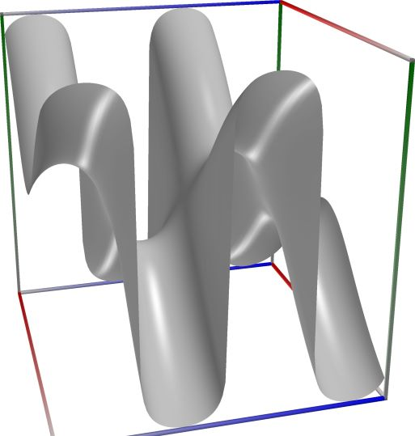
\(\quad\)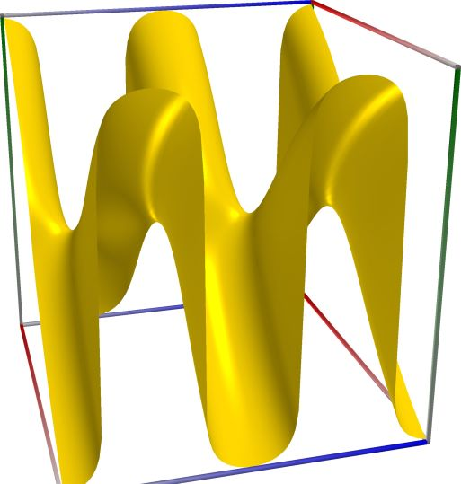
\(\quad\)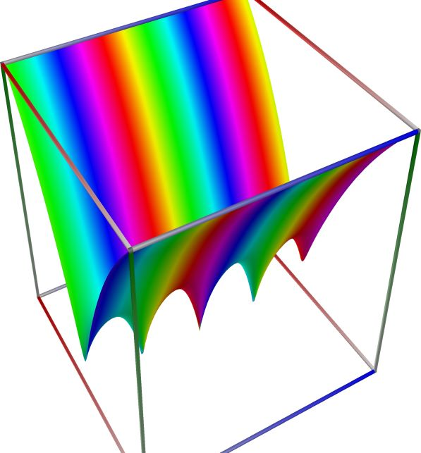
3D wpf plot: real part (left figure), imaginary part (middle figure) and absolute value with color-coded phase (right figure) of the complex sine function \(z = \sin(x + iy)\), with \(-6 \le x \le 6\) (blue axis), \(-6 \le y \le 6\) (red axis), \(-10 \le z \le 10\) (green axis). Function values are loglog-transformed.
An example with real input:
>>> from xlcalcnet import * >>> x = -5.1; dps = 90 >>> for ctx in gui.ctxlist_real: print(ctx.fmtname + ': ' + ctx.fmt(ctx.sin(x))) fpm: 0.925814682327732 mpm: 0.925814682327732296946146247544863312509403016355603948797054551932281847236566889436906375 dpm: 0.925814682327732296946146247544863312509403016355603948797054551932281847236566889436906375 ipm: [0.92581468232773229694614624754486331250940301635560394879705455193228184723656688943690637503659, 0.9258146823277322969461462475448633125094030163556039487970545519322818472365668894369063755275] gpm: 0.92581468232773229694614624754486331250940301635560394879705455193228184723656688943690637504 apm: [0.92581468232773229694614624754486331250940301635560394879705455193228184723656688943690638 +/- 5.10e-90] math53: 0.925814682327732 sreal: 0.9258147 dreal: 0.925814682327732 ereal: 0.92581468232773229699 qreal: 0.925814682327732296946146247544863 oreal: 0.92581468232773229694614624754486331250940301635560394879705455193228186 mreal: 0.925814682327732296946146247544863312509403016355603948797054551932281847236566889436906376 sflint: 0.9258147 dflint: 0.925814682327732 eflint: 0.92581468232773229699 qflint: 0.925814682327732296946146247544863 oflint: 0.92581468232773229694614624754486331250940301635560394879705455193228185 mflint: 0.925814682327732296946146247544863312509403016355603948797054551932281847236566889436906376 aflint: [0.925814682327732296946146247544863312509403016355603948797054551932281847236566889436906375 +/- 9.57e-91]
An example with complex input, using C#-style formatting for complex numbers for the result
>>> from xlcalcnet import * >>> x = -5.1+2j; gui.setdps(50) >>> for ctx in [fpm, mpm, cmath53, qcplx]: print(ctx.fmtname + ': ' + ctx.fmt(ctx.sin(x))) fpm: (3.48309600859536, 1.37087251009309) mpm: (3.483096008595355530539519132049601874260208157133, 1.3708725100930962119067139658774871514235754109441) cmath53: (3.48309600859536, 1.37087251009309) qcplx: (3.4830960085953555305395191320496, 1.37087251009309621190671396587749)
An example with the same complex input as above, showing only the real part of the result:
>>> from xlcalcnet import * >>> x = -5.1+2j; gui.setdps(90) >>> for ctx in gui.ctxlist_cplx: print(ctx.fmtname + ': ' + ctx.realctx.fmt(ctx.real(ctx.sin(x)))) fpm: 3.48309600859536 mpm: 3.48309600859535553053951913204960187426020815713299066103565188114779116680123268271030781 dpm: 3.48309600859535553053951913204960187426020815713299066103565188114779116680123268271030781 ipm: [3.4830960085953555305395191320496018742602081571329906610356518811477911668012326827103078127848, 3.4830960085953555305395191320496018742602081571329906610356518811477911668012326827103078147484] gpm: 3.4830960085953555305395191320496018742602081571329906610356518811477911668012326827103078133 apm: [3.48309600859535553053951913204960187426020815713299066103565188114779116680123268271030781 +/- 6.64e-90] cmath53: 3.48309600859536 scplx: 3.483096 dcplx: 3.48309600859536 ecplx: 3.4830960085953555309 qcplx: 3.4830960085953555305395191320496 ocplx: 3.4830960085953555305395191320496018742602081571329906610356518811477912 mcplx: 3.48309600859535553053951913204960187426020815713299066103565188114779116680123268271030782 sflintc: 3.483096 dflintc: 3.48309600859536 eflintc: 3.4830960085953555307 qflintc: 3.4830960085953555305395191320496 oflintc: 3.4830960085953555305395191320496018742602081571329906610356518811477912 mflintc: 3.48309600859535553053951913204960187426020815713299066103565188114779116680123268271030782 aflintc: [3.48309600859535553053951913204960187426020815713299066103565188114779116680123268271030781 +/- 8.22e-90]
An example with the same complex input as above, showing only the imaginary part of the result:
>>> from xlcalcnet import * >>> x = -5.1+2j; gui.setdps(90) >>> for ctx in gui.ctxlist_cplx: print(ctx.fmtname + ': ' + ctx.realctx.fmt(ctx.imag(ctx.sin(x)))) fpm: 1.37087251009309 mpm: 1.37087251009309621190671396587748715142357541094412916331060531052891362760947942650352236 dpm: 1.37087251009309621190671396587748715142357541094412916331060531052891362760947942650352236 ipm: [1.3708725100930962119067139658774871514235754109441291633106053105289136276094794265035223541435, 1.3708725100930962119067139658774871514235754109441291633106053105289136276094794265035223575799] gpm: 1.3708725100930962119067139658774871514235754109441291633106053105289136276094794265035223576 apm: [1.37087251009309621190671396587748715142357541094412916331060531052891362760947942650352235 +/- 7.68e-90] cmath53: 1.37087251009309 scplx: 1.370872 dcplx: 1.37087251009309 ecplx: 1.3708725100930962117 qcplx: 1.37087251009309621190671396587749 ocplx: 1.3708725100930962119067139658774871514235754109441291633106053105289136 mcplx: 1.37087251009309621190671396587748715142357541094412916331060531052891362760947942650352235 sflintc: 1.370872 dflintc: 1.37087251009309 eflintc: 1.3708725100930962116 qflintc: 1.37087251009309621190671396587749 oflintc: 1.3708725100930962119067139658774871514235754109441291633106053105289136 mflintc: 1.37087251009309621190671396587748715142357541094412916331060531052891362760947942650352235 aflintc: [1.37087251009309621190671396587748715142357541094412916331060531052891362760947942650352235 +/- 7.29e-90]


Cosine, \(\cos(x)\)#
- ctx.cos(x)#
where
ctxismath53,mathc53,ctxcpp,ctxflint.Returns the cosine of \(x\), \(\cos(x)\). See also Wikipedia [1245], MathWorld [858], NIST [492], Ehrhardt [297] (4.2.19), Flint [745], Flint [735], Mpmath [541].
The cosine can be defined as \(\displaystyle \cos(x) = 1 - \frac{x^2}{2!} + \frac{x^4}{4!} - \frac{x^6}{6!} + \cdots = \sum_{n=0}^\infty \frac{(-1)^n}{(2n)!}x^{2n}\).
The complex cosine can be expressed in terms of related real functions:
\[\cos(z) = \cos(x+iy) = \frac {e^{ix}+e^{-ix}}{2} = \cos(x) \cosh(y) - i \sin(x) \sinh(y).\]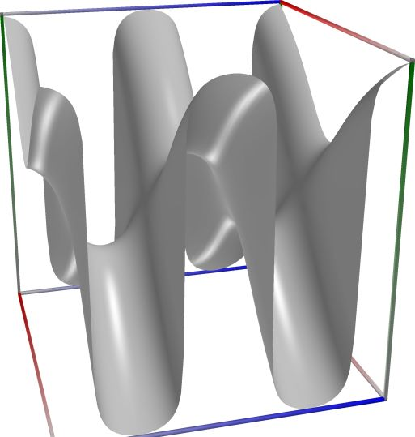
\(\quad\)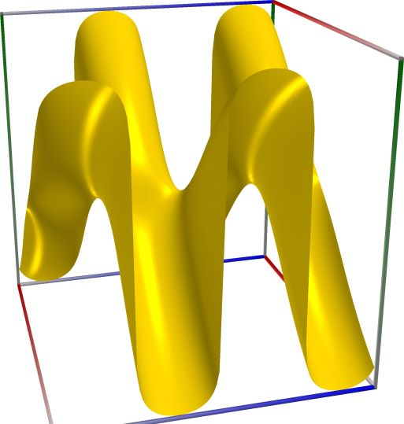
\(\quad\)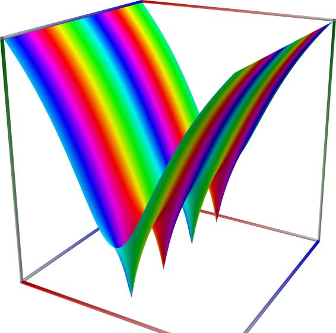
3D wpf plot: real part (left figure), imaginary part (middle figure) and absolute value with color-coded phase (right figure) of the complex sine function \(z = \sin(x + iy)\), with \(-6 \le x \le 6\) (blue axis), \(-6 \le y \le 6\) (red axis), \(-10 \le z \le 10\) (green axis). Function values are loglog-transformed.
An example with real input:
>>> from xlcalcnet import * >>> x = -5.1; dps = 90 >>> for ctx in gui.ctxlist_real: print(ctx.fmtname + ': ' + ctx.fmt(ctx.cos(x))) fpm: 0.37797774271298 mpm: 0.377977742712980563320575552928981670898641576134277570541766913010950893251609440625897683 dpm: 0.377977742712980563320575552928981670898641576134277570541766913010950893251609440625897683 ipm: [0.37797774271298056332057555292898167089864157613427757054176691301095089325160944062589768209893, 0.37797774271298056332057555292898167089864157613427757054176691301095089325160944062589768308075] gpm: 0.37797774271298056332057555292898167089864157613427757054176691301095089325160944062589768308 apm: [0.37797774271298056332057555292898167089864157613427757054176691301095089325160944062589768 +/- 3.09e-90] math53: 0.37797774271298 sreal: 0.3779777 dreal: 0.37797774271298 ereal: 0.37797774271298056325 qreal: 0.377977742712980563320575552928981 oreal: 0.37797774271298056332057555292898167089864157613427757054176691301095088 mreal: 0.377977742712980563320575552928981670898641576134277570541766913010950893251609440625897682 sflint: 0.3779777 dflint: 0.37797774271298 eflint: 0.37797774271298056325 qflint: 0.377977742712980563320575552928981 oflint: 0.37797774271298056332057555292898167089864157613427757054176691301095088 mflint: 0.377977742712980563320575552928981670898641576134277570541766913010950893251609440625897682 aflint: [0.37797774271298056332057555292898167089864157613427757054176691301095089325160944062589768 +/- 2.91e-90]
An example with complex input, using C#-style formatting for complex numbers for the result
>>> from xlcalcnet import * >>> x = -5.1+2j; gui.setdps(50) >>> for ctx in [fpm, mpm, cmath53, qcplx]: print(ctx.fmtname + ': ' + ctx.fmt(ctx.cos(x))) fpm: (1.42202623496029, -3.35780061633792) mpm: (1.422026234960292955396539360870233912467820877167, -3.3578006163379172772035196527315872423074652542758) cmath53: (1.42202623496029, -3.35780061633792) qcplx: (1.42202623496029295539653936087023, -3.35780061633791727720351965273159)
An example with the same complex input as above, showing only the real part of the result:
>>> from xlcalcnet import * >>> x = -5.1+2j; gui.setdps(90) >>> for ctx in gui.ctxlist_cplx: print(ctx.fmtname + ': ' + ctx.realctx.fmt(ctx.real(ctx.cos(x)))) fpm: 1.42202623496029 mpm: 1.4220262349602929553965393608702339124678208771670292789040771311660306423880475424739814 dpm: 1.4220262349602929553965393608702339124678208771670292789040771311660306423880475424739814 ipm: [1.4220262349602929553965393608702339124678208771670292789040771311660306423880475424739813999663, 1.4220262349602929553965393608702339124678208771670292789040771311660306423880475424739814036481] gpm: 1.4220262349602929553965393608702339124678208771670292789040771311660306423880475424739814036 apm: [1.42202623496029295539653936087023391246782087716702927890407713116603064238804754247398140 +/- 4.44e-90] cmath53: 1.42202623496029 scplx: 1.422026 dcplx: 1.42202623496029 ecplx: 1.4220262349602929552 qcplx: 1.42202623496029295539653936087023 ocplx: 1.4220262349602929553965393608702339124678208771670292789040771311660306 mcplx: 1.4220262349602929553965393608702339124678208771670292789040771311660306423880475424739814 sflintc: 1.422026 dflintc: 1.42202623496029 eflintc: 1.4220262349602929551 qflintc: 1.42202623496029295539653936087023 oflintc: 1.4220262349602929553965393608702339124678208771670292789040771311660306 mflintc: 1.4220262349602929553965393608702339124678208771670292789040771311660306423880475424739814 aflintc: [1.42202623496029295539653936087023391246782087716702927890407713116603064238804754247398140 +/- 7.00e-90]
An example with the same complex input as above, showing only the imaginary part of the result:
>>> from xlcalcnet import * >>> x = -5.1+2j; gui.setdps(90) >>> for ctx in gui.ctxlist_cplx: print(ctx.fmtname + ': ' + ctx.realctx.fmt(ctx.imag(ctx.cos(x)))) fpm: -3.35780061633792 mpm: -3.3578006163379172772035196527315872423074652542757928428039747801194575461507026414323612 dpm: -3.3578006163379172772035196527315872423074652542757928428039747801194575461507026414323612 ipm: [-3.3578006163379172772035196527315872423074652542757928428039747801194575461507026414323611981024, -3.3578006163379172772035196527315872423074652542757928428039747801194575461507026414323611961387] gpm: -3.3578006163379172772035196527315872423074652542757928428039747801194575461507026414323611966 apm: [-3.35780061633791727720351965273158724230746525427579284280397478011945754615070264143236120 +/- 5.68e-90] cmath53: -3.35780061633792 scplx: -3.357801 dcplx: -3.35780061633792 ecplx: -3.3578006163379172774 qcplx: -3.35780061633791727720351965273159 ocplx: -3.3578006163379172772035196527315872423074652542757928428039747801194576 mcplx: -3.3578006163379172772035196527315872423074652542757928428039747801194575461507026414323612 sflintc: -3.357801 dflintc: -3.35780061633792 eflintc: -3.3578006163379172774 qflintc: -3.35780061633791727720351965273159 oflintc: -3.3578006163379172772035196527315872423074652542757928428039747801194576 mflintc: -3.3578006163379172772035196527315872423074652542757928428039747801194575461507026414323612 aflintc: [-3.3578006163379172772035196527315872423074652542757928428039747801194575461507026414323612 +/- 1.22e-89]


Tangent, \(\tan(x)\)#
- ctx.tan(x)#
where
ctxismath53,mathc53,ctxcpp,ctxflint.Returns the tangent of \(x\), \(\tan(x)\). See also Wikipedia [1245], MathWorld [874], NIST [492], Ehrhardt [297] (4.2.61), Flint [745], Flint [735], Mpmath [580].
The tangent can be defined in terms of related functions as \(\displaystyle \tan(x) = \frac{\sin(x)}{\cos(x)}\).
The tangent function is singular at \(x = (n+1/2)\pi\), but
tan(x)always returns a finite result since \((n+1/2)\pi\) cannot be represented exactly using floating-point arithmetic.The complex tangent can be expressed in terms of related real functions:
\[\tan(z) = \tan(x+iy) = \frac{\sin(z)}{\cos(z)} = \frac{\sin(2x) + i \sinh(2y)}{\cos(2x) + i \cosh(2y)}\]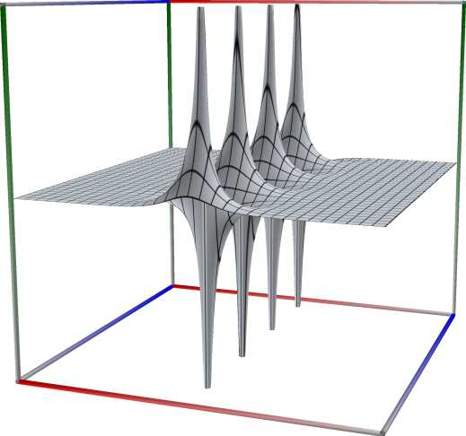
\(\quad\)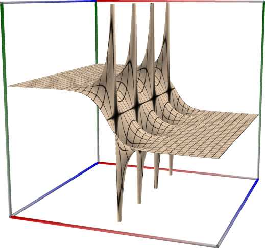
\(\quad\)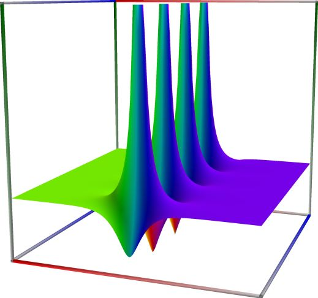
3D wpf plot: real part (left figure), imaginary part (middle figure) and absolute value with color-coded phase (right figure) of the complex sine function \(z = \sin(x + iy)\), with \(-6 \le x \le 6\) (blue axis), \(-6 \le y \le 6\) (red axis), \(-10 \le z \le 10\) (green axis). Function values are loglog-transformed.
An example with real input:
>>> from xlcalcnet import * >>> x = -5.1; dps = 90 >>> for ctx in gui.ctxlist_real: print(ctx.fmtname + ': ' + ctx.fmt(ctx.tan(x))) fpm: 2.4493894155846 mpm: 2.44938941558459612055988620922824760358810196428080232272545402848798973614858271782375412 dpm: 2.44938941558459612055988620922824760358810196428080232272545402848798973614858271782375412 ipm: [2.4493894155845961205598862092282476035881019642808023227254540284879897361485827178237541181005, 2.449389415584596120559886209228247603588101964280802322725454028487989736148582717823754125955] gpm: 2.4493894155845961205598862092282476035881019642808023227254540284879897361485827178237541181 apm: [2.4493894155845961205598862092282476035881019642808023227254540284879897361485827178237541 +/- 3.25e-89] math53: 2.4493894155846 sreal: 2.44939 dreal: 2.4493894155846 ereal: 2.449389415584596121 qreal: 2.44938941558459612055988620922825 oreal: 2.4493894155845961205598862092282476035881019642808023227254540284879898 mreal: 2.44938941558459612055988620922824760358810196428080232272545402848798973614858271782375412 sflint: 2.44939 dflint: 2.4493894155846 eflint: 2.4493894155845961213 qflint: 2.44938941558459612055988620922825 oflint: 2.4493894155845961205598862092282476035881019642808023227254540284879898 mflint: 2.44938941558459612055988620922824760358810196428080232272545402848798973614858271782375412 aflint: [2.4493894155845961205598862092282476035881019642808023227254540284879897361485827178237541 +/- 3.27e-89]
An example with complex input, using C#-style formatting for complex numbers for the result
>>> from xlcalcnet import * >>> x = -5.1+2j; gui.setdps(50) >>> for ctx in [fpm, mpm, cmath53, qcplx]: print(ctx.fmtname + ': ' + ctx.fmt(ctx.tan(x))) fpm: (0.0263170471239393, 1.02616946950124) mpm: (0.026317047123939355463586388171458092005197114886713, 1.0261694695012430272310278504175614822444826456555) cmath53: (0.0263170471239394, 1.02616946950124) qcplx: (0.0263170471239393554635863881714581, 1.02616946950124302723102785041756)
An example with the same complex input as above, showing only the real part of the result:
>>> from xlcalcnet import * >>> x = -5.1+2j; gui.setdps(90) >>> for ctx in gui.ctxlist_cplx: print(ctx.fmtname + ': ' + ctx.realctx.fmt(ctx.real(ctx.tan(x)))) fpm: 0.0263170471239393 mpm: 0.0263170471239393554635863881714580920051971148867129562583210407686204739208456142242529423 dpm: 0.0263170471239393554635863881714580920051971148867129562583210407686204739208456142242529423 ipm: [0.026317047123939355463586388171458092005197114886712956258321040768620473920845614224252941110451, 0.026317047123939355463586388171458092005197114886712956258321040768620473920845614224252943407753] gpm: 0.026317047123939355463586388171458092005197114886712956258321040768620473920845614224252942322 apm: [0.026317047123939355463586388171458092005197114886712956258321040768620473920845614224252942 +/- 3.30e-91] cmath53: 0.0263170471239394 scplx: 0.02631704 dcplx: 0.0263170471239394 ecplx: 0.026317047123939355462 qcplx: 0.0263170471239393554635863881714581 ocplx: 0.026317047123939355463586388171458092005197114886712956258321040768620478 mcplx: 0.0263170471239393554635863881714580920051971148867129562583210407686204739208456142242529423 sflintc: 0.02631704 dflintc: 0.0263170471239393 eflintc: 0.026317047123939355459 qflintc: 0.0263170471239393554635863881714581 oflintc: 0.026317047123939355463586388171458092005197114886712956258321040768620473 mflintc: 0.0263170471239393554635863881714580920051971148867129562583210407686204739208456142242529423 aflintc: [0.026317047123939355463586388171458092005197114886712956258321040768620473920845614224252942 +/- 3.26e-91]
An example with the same complex input as above, showing only the imaginary part of the result:
>>> from xlcalcnet import * >>> x = -5.1+2j; gui.setdps(90) >>> for ctx in gui.ctxlist_cplx: print(ctx.fmtname + ': ' + ctx.realctx.fmt(ctx.imag(ctx.tan(x)))) fpm: 1.02616946950124 mpm: 1.0261694695012430272310278504175614822444826456554717376909625458860780426182375696070071 dpm: 1.0261694695012430272310278504175614822444826456554717376909625458860780426182375696070071 ipm: [1.0261694695012430272310278504175614822444826456554717376909625458860780426182375696070071029404, 1.0261694695012430272310278504175614822444826456554717376909625458860780426182375696070071068676] gpm: 1.0261694695012430272310278504175614822444826456554717376909625458860780426182375696070071049 apm: [1.02616946950124302723102785041756148224448264565547173769096254588607804261823756960700710 +/- 5.21e-90] cmath53: 1.02616946950124 scplx: 1.026169 dcplx: 1.02616946950124 ecplx: 1.0261694695012430273 qcplx: 1.02616946950124302723102785041756 ocplx: 1.026169469501243027231027850417561482244482645655471737690962545886078 mcplx: 1.02616946950124302723102785041756148224448264565547173769096254588607804261823756960700711 sflintc: 1.026169 dflintc: 1.02616946950124 eflintc: 1.0261694695012430272 qflintc: 1.02616946950124302723102785041756 oflintc: 1.026169469501243027231027850417561482244482645655471737690962545886078 mflintc: 1.02616946950124302723102785041756148224448264565547173769096254588607804261823756960700711 aflintc: [1.02616946950124302723102785041756148224448264565547173769096254588607804261823756960700710 +/- 5.21e-90]


Cotangent, \(\cot(x)\)#
- ctx.cot(x)#
where
ctxismath53,mathc53,ctxcpp,ctxflint.Returns the cotangent of \(x\), \(\mathrm{cot}(x)\). See also Wikipedia [1245], MathWorld [859], NIST [492], Ehrhardt [297] (4.2.21), Flint [745], Flint [735], Mpmath [560].
The cotangent can be expressed in terms of related functions as \(\displaystyle \cot(x) = \frac{\cos(x)}{\sin(x)}\).
This cotangent function is singular at \(x = n \pi\), but with the exception of the point \(x = 0\),
cot(x)returns a finite result since \(n \pi\) cannot be represented exactly using floating-point arithmetic.The complex cotangent can be expressed in terms of related real functions:
\[\cot(z) = \cot(x+iy) = \frac{\cos(z)}{\sin(z)} = \frac{\cos(2x) + i \cosh(2y)}{\sin(2x) + i \sinh(2y)}\]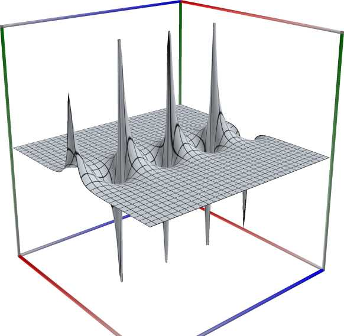
\(\quad\)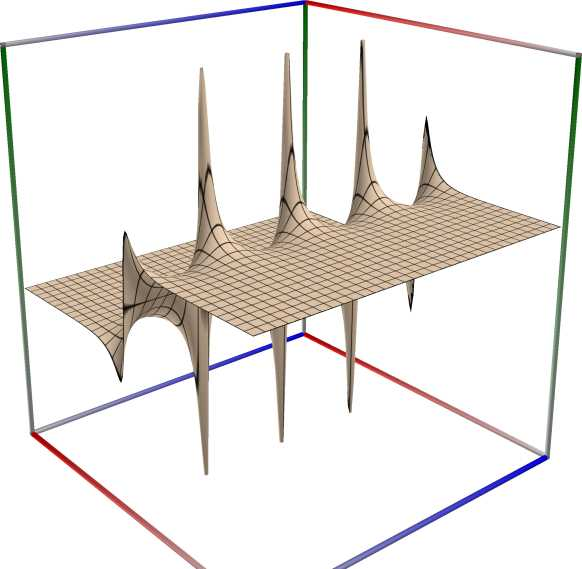
\(\quad\)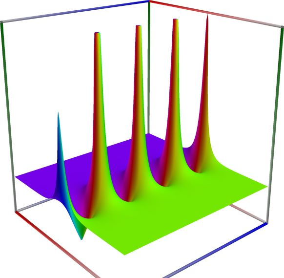
3D wpf plot: real part (left figure), imaginary part (middle figure) and absolute value with color-coded phase (right figure) of the complex sine function \(z = \sin(x + iy)\), with \(-6 \le x \le 6\) (blue axis), \(-6 \le y \le 6\) (red axis), \(-10 \le z \le 10\) (green axis). Function values are loglog-transformed.
An example with real input:
>>> from xlcalcnet import * >>> x = -5.1; dps = 90 >>> for ctx in gui.ctxlist_real: print(ctx.fmtname + ': ' + ctx.fmt(ctx.cot(x))) fpm: 0.408265012348528 mpm: 0.408265012348528442391719993100327693246901773930599403444213474192199451971824043715889103 dpm: 0.408265012348528442391719993100327693246901773930599403444213474192199451971824043715889103 ipm: [0.40826501234852844239171999310032769324690177393059940344421347419219945197182404371588910198644, 0.40826501234852844239171999310032769324690177393059940344421347419219945197182404371588910327508] gpm: 0.40826501234852844239171999310032769324690177393059940344421347419219945197182404371588910321 apm: [0.40826501234852844239171999310032769324690177393059940344421347419219945197182404371588910 +/- 3.29e-90] math53: 0.408265012348528 sreal: 0.4082649 dreal: 0.408265012348528 ereal: 0.4082650123485284423 qreal: 0.408265012348528442391719993100327 oreal: 0.40826501234852844239171999310032769324690177393059940344421347419219944 mreal: 0.408265012348528442391719993100327693246901773930599403444213474192199451971824043715889102 sflint: 0.4082649 dflint: 0.408265012348528 eflint: 0.4082650123485284423 qflint: 0.408265012348528442391719993100327 oflint: 0.40826501234852844239171999310032769324690177393059940344421347419219943 mflint: 0.408265012348528442391719993100327693246901773930599403444213474192199451971824043715889102 aflint: [0.40826501234852844239171999310032769324690177393059940344421347419219945197182404371588910 +/- 3.07e-90]
An example with complex input, using C#-style formatting for complex numbers for the result
>>> from xlcalcnet import * >>> x = -5.1+2j; gui.setdps(50) >>> for ctx in [fpm, mpm, cmath53, qcplx]: print(ctx.fmtname + ': ' + ctx.fmt(ctx.cot(x))) fpm: (0.0249754563424156, -0.973857388511288) mpm: (0.024975456342415621926156377087312194722467043567352, -0.97385738851128841420836091127539264162749067834714) cmath53: (0.0249754563424156, -0.973857388511288) qcplx: (0.0249754563424156219261563770873122, -0.973857388511288414208360911275393)
An example with the same complex input as above, showing only the real part of the result:
>>> from xlcalcnet import * >>> x = -5.1+2j; gui.setdps(90) >>> for ctx in gui.ctxlist_cplx: print(ctx.fmtname + ': ' + ctx.realctx.fmt(ctx.real(ctx.cot(x)))) fpm: 0.0249754563424156 mpm: 0.0249754563424156219261563770873121947224670435673521287347675462080291885709983153916781071 dpm: 0.0249754563424156219261563770873121947224670435673521287347675462080291885709983153916781071 ipm: [0.024975456342415621926156377087312194722467043567352128734767546208029188570998315391678105941981, 0.024975456342415621926156377087312194722467043567352128734767546208029188570998315391678108116556] gpm: 0.024975456342415621926156377087312194722467043567352128734767546208029188570998315391678107093 apm: [0.0249754563424156219261563770873121947224670435673521287347675462080291885709983153916781070 +/- 9.83e-92] cmath53: 0.0249754563424156 scplx: 0.02497545 dcplx: 0.0249754563424156 ecplx: 0.02497545634241562192 qcplx: 0.0249754563424156219261563770873122 ocplx: 0.024975456342415621926156377087312194722467043567352128734767546208029192 mcplx: 0.024975456342415621926156377087312194722467043567352128734767546208029188570998315391678107 sflintc: 0.02497545 dflintc: 0.0249754563424156 eflintc: 0.024975456342415621922 qflintc: 0.0249754563424156219261563770873122 oflintc: 0.024975456342415621926156377087312194722467043567352128734767546208029188 mflintc: 0.024975456342415621926156377087312194722467043567352128734767546208029188570998315391678107 aflintc: [0.0249754563424156219261563770873121947224670435673521287347675462080291885709983153916781070 +/- 9.33e-92]
An example with the same complex input as above, showing only the imaginary part of the result:
>>> from xlcalcnet import * >>> x = -5.1+2j; gui.setdps(90) >>> for ctx in gui.ctxlist_cplx: print(ctx.fmtname + ': ' + ctx.realctx.fmt(ctx.imag(ctx.cot(x)))) fpm: -0.973857388511288 mpm: -0.973857388511288414208360911275392641627490678347144831618666230128741913014087505160420947 dpm: -0.973857388511288414208360911275392641627490678347144831618666230128741913014087505160420947 ipm: [-0.97385738851128841420836091127539264162749067834714483161866623012874191301408750516042094905402, -0.97385738851128841420836091127539264162749067834714483161866623012874191301408750516042094561765] gpm: -0.97385738851128841420836091127539264162749067834714483161866623012874191301408750516042094734 apm: [-0.973857388511288414208360911275392641627490678347144831618666230128741913014087505160420947 +/- 3.91e-91] cmath53: -0.973857388511288 scplx: -0.9738575 dcplx: -0.973857388511288 ecplx: -0.97385738851128841409 qcplx: -0.973857388511288414208360911275393 ocplx: -0.97385738851128841420836091127539264162749067834714483161866623012874191 mcplx: -0.973857388511288414208360911275392641627490678347144831618666230128741913014087505160420947 sflintc: -0.9738574 dflintc: -0.973857388511288 eflintc: -0.9738573885112884142 qflintc: -0.973857388511288414208360911275393 oflintc: -0.97385738851128841420836091127539264162749067834714483161866623012874191 mflintc: -0.973857388511288414208360911275392641627490678347144831618666230128741913014087505160420947 aflintc: [-0.973857388511288414208360911275392641627490678347144831618666230128741913014087505160420947 +/- 6.96e-91]


Cosecant, \(\mathrm{csc}(x)\)#
- ctx.csc(x)#
where
ctxismath53,mathc53,ctxcpporctxflint.Returns the cosecant of \(x\), \(\mathrm{csc}(x)\). See also Wikipedia [1245], MathWorld [857], NIST [492], Ehrhardt [297] (4.2.23), Flint [745], Flint [735], Mpmath [559].
The cosecant can be expressed in terms of related functions as \(\displaystyle \csc(x) = \frac{1}{\sin(x)}\).
The cosecant function is singular at \(x = n \pi\), but with the exception of the point \(x = 0\),
csc(x)returns a finite result since \(n \pi\) cannot be represented exactly using floating-point arithmetic.The complex cosecant can be expressed in terms of related real functions:
\[\csc(z) = \csc(x+iy) = \frac{1}{\sin(z)} = \frac {2i}{e^{ix}-e^{-ix}} = \frac {1} {\sin(x) \cosh(y) + i \cos(x) \sinh(y)}.\]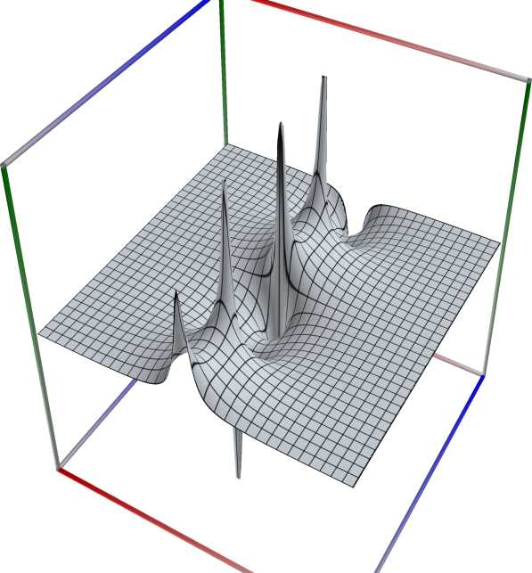
\(\quad\)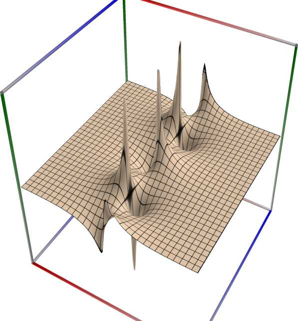
\(\quad\)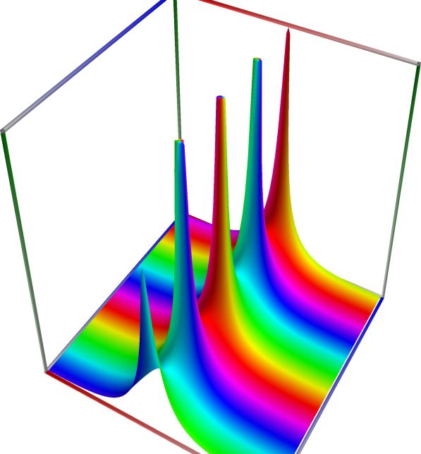
3D wpf plot: real part (left figure), imaginary part (middle figure) and absolute value with color-coded phase (right figure) of the complex sine function \(z = \sin(x + iy)\), with \(-6 \le x \le 6\) (blue axis), \(-6 \le y \le 6\) (red axis), \(-10 \le z \le 10\) (green axis). Function values are loglog-transformed.
An example with real input:
>>> from xlcalcnet import * >>> x = -5.1; dps = 90 >>> for ctx in gui.ctxlist_real: print(ctx.fmtname + ': ' + ctx.fmt(ctx.csc(x))) fpm: 1.08012977012392 mpm: 1.08012977012391621311248119318632937583037967722784817055351130765695253181589021676638289 dpm: 1.08012977012391621311248119318632937583037967722784817055351130765695253181589021676638289 ipm: [1.0801297701239162131124811931863293758303796772278481705535113076569525318158902167663828903284, 1.0801297701239162131124811931863293758303796772278481705535113076569525318158902167663828910648] gpm: 1.0801297701239162131124811931863293758303796772278481705535113076569525318158902167663828908 apm: [1.08012977012391621311248119318632937583037967722784817055351130765695253181589021676638289 +/- 1.03e-90] math53: 1.08012977012392 sreal: 1.08013 dreal: 1.08012977012392 ereal: 1.080129770123916213 qreal: 1.08012977012391621311248119318633 oreal: 1.0801297701239162131124811931863293758303796772278481705535113076569525 mreal: 1.08012977012391621311248119318632937583037967722784817055351130765695253181589021676638289 sflint: 1.08013 dflint: 1.08012977012392 eflint: 1.080129770123916213 qflint: 1.08012977012391621311248119318633 oflint: 1.0801297701239162131124811931863293758303796772278481705535113076569525 mflint: 1.08012977012391621311248119318632937583037967722784817055351130765695253181589021676638289 aflint: [1.08012977012391621311248119318632937583037967722784817055351130765695253181589021676638289 +/- 1.70e-90]
An example with complex input, using C#-style formatting for complex numbers for the result
>>> from xlcalcnet import * >>> x = -5.1+2j; gui.setdps(50) >>> for ctx in [fpm, mpm, cmath53, qcplx]: print(ctx.fmtname + ': ' + ctx.fmt(ctx.csc(x))) fpm: (0.248592823375937, -0.0978408481797583) mpm: (0.24859282337593718934061244952557169864695610247605, -0.097840848179758428421910032913974631441522709941308) cmath53: (0.248592823375937, -0.0978408481797584) qcplx: (0.248592823375937189340612449525572, -0.0978408481797584284219100329139746)
An example with the same complex input as above, showing only the real part of the result:
>>> from xlcalcnet import * >>> x = -5.1+2j; gui.setdps(90) >>> for ctx in gui.ctxlist_cplx: print(ctx.fmtname + ': ' + ctx.realctx.fmt(ctx.real(ctx.csc(x)))) fpm: 0.248592823375937 mpm: 0.248592823375937189340612449525571698646956102476047511519396373788658897429749896022246682 dpm: 0.248592823375937189340612449525571698646956102476047511519396373788658897429749896022246682 ipm: [0.24859282337593718934061244952557169864695610247604751151939637378865889742974989602224668175196, 0.24859282337593718934061244952557169864695610247604751151939637378865889742974989602224668221219] gpm: 0.24859282337593718934061244952557169864695610247604751151939637378865889742974989602224668194 apm: [0.248592823375937189340612449525571698646956102476047511519396373788658897429749896022246682 +/- 2.24e-91] cmath53: 0.248592823375937 scplx: 0.2485928 dcplx: 0.248592823375937 ecplx: 0.24859282337593718934 qcplx: 0.248592823375937189340612449525572 ocplx: 0.2485928233759371893406124495255716986469561024760475115193963737886589 mcplx: 0.248592823375937189340612449525571698646956102476047511519396373788658897429749896022246682 sflintc: 0.2485928 dflintc: 0.248592823375937 eflintc: 0.24859282337593718935 qflintc: 0.248592823375937189340612449525572 oflintc: 0.2485928233759371893406124495255716986469561024760475115193963737886589 mflintc: 0.248592823375937189340612449525571698646956102476047511519396373788658897429749896022246682 aflintc: [0.248592823375937189340612449525571698646956102476047511519396373788658897429749896022246682 +/- 6.73e-91]
An example with the same complex input as above, showing only the imaginary part of the result:
>>> from xlcalcnet import * >>> x = -5.1+2j; gui.setdps(90) >>> for ctx in gui.ctxlist_cplx: print(ctx.fmtname + ': ' + ctx.realctx.fmt(ctx.imag(ctx.csc(x)))) fpm: -0.0978408481797583 mpm: -0.0978408481797584284219100329139746314415227099413086822460924157168089818084995972545304144 dpm: -0.0978408481797584284219100329139746314415227099413086822460924157168089818084995972545304143 ipm: [-0.097840848179758428421910032913974631441522709941308682246092415716808981808499597254530414423317, -0.097840848179758428421910032913974631441522709941308682246092415716808981808499597254530414039794] gpm: -0.097840848179758428421910032913974631441522709941308682246092415716808981808499597254530414362 apm: [-0.097840848179758428421910032913974631441522709941308682246092415716808981808499597254530414 +/- 4.24e-91] cmath53: -0.0978408481797584 scplx: -0.09784083 dcplx: -0.0978408481797583 ecplx: -0.097840848179758428395 qcplx: -0.0978408481797584284219100329139746 ocplx: -0.097840848179758428421910032913974631441522709941308682246092415716808978 mcplx: -0.097840848179758428421910032913974631441522709941308682246092415716808981808499597254530414 sflintc: -0.09784082 dflintc: -0.0978408481797583 eflintc: -0.097840848179758428402 qflintc: -0.0978408481797584284219100329139746 oflintc: -0.097840848179758428421910032913974631441522709941308682246092415716808979 mflintc: -0.097840848179758428421910032913974631441522709941308682246092415716808981808499597254530414 aflintc: [-0.097840848179758428421910032913974631441522709941308682246092415716808981808499597254530414 +/- 4.20e-91]


Secant, \(\mathrm{sec}(x)\)#
- ctx.sec(x)#
where
ctxismath53,mathc53,ctxcpporctxflint.Returns the secant of \(x\), \(\mathrm{sec}(x)\). See also Wikipedia [1245], MathWorld [872], NIST [492], Ehrhardt [297] (4.2.53), Flint [745], Flint [735], Mpmath [579].
The secant can be expressed in terms of related functions as \(\displaystyle \sec(x) = \frac{1}{\cos(x)}\).
The secant function is singular at \(x = (n+1/2)\pi\), but
sec(x)always returns a finite result since \((n+1/2)\pi\) cannot be represented exactly using floating-point arithmetic.The complex secant can be expressed in terms of related real functions:
\[\sec(z) = \sec(x+iy) = \frac{1}{\cos(z)} = \frac {2}{e^{ix}+e^{-ix}} = \frac {1} {\cos(x) \cosh(y) - i \sin(x) \sinh(y)}.\]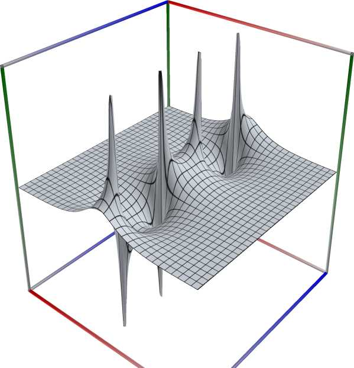
\(\quad\)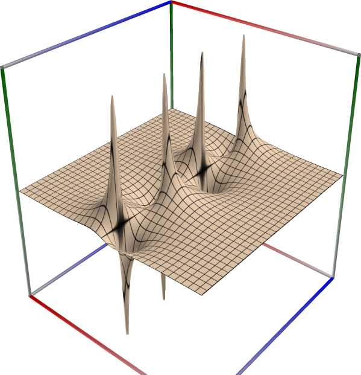
\(\quad\)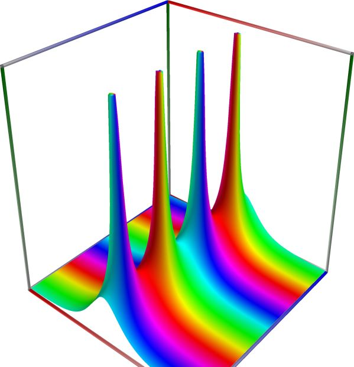
3D wpf plot: real part (left figure), imaginary part (middle figure) and absolute value with color-coded phase (right figure) of the complex sine function \(z = \sin(x + iy)\), with \(-6 \le x \le 6\) (blue axis), \(-6 \le y \le 6\) (red axis), \(-10 \le z \le 10\) (green axis). Function values are loglog-transformed.
An example with real input:
>>> from xlcalcnet import * >>> x = -5.1; dps = 90 >>> for ctx in gui.ctxlist_real: print(ctx.fmtname + ': ' + ctx.fmt(ctx.sec(x))) fpm: 2.64565842639935 mpm: 2.64565842639934328406027873883707286536032192092616777280010393745551939033638123640770908 dpm: 2.64565842639934328406027873883707286536032192092616777280010393745551939033638123640770908 ipm: [2.6456584263993432840602787388370728653603219209261677728001039374555193903363812364077090762396, 2.6456584263993432840602787388370728653603219209261677728001039374555193903363812364077090831124] gpm: 2.6456584263993432840602787388370728653603219209261677728001039374555193903363812364077090767 apm: [2.64565842639934328406027873883707286536032192092616777280010393745551939033638123640770908 +/- 9.61e-90] math53: 2.64565842639935 sreal: 2.645659 dreal: 2.64565842639935 ereal: 2.6456584263993432845 qreal: 2.64565842639934328406027873883707 oreal: 2.6456584263993432840602787388370728653603219209261677728001039374555195 mreal: 2.64565842639934328406027873883707286536032192092616777280010393745551939033638123640770908 sflint: 2.645659 dflint: 2.64565842639935 eflint: 2.6456584263993432847 qflint: 2.64565842639934328406027873883707 oflint: 2.6456584263993432840602787388370728653603219209261677728001039374555195 mflint: 2.64565842639934328406027873883707286536032192092616777280010393745551939033638123640770908 aflint: [2.6456584263993432840602787388370728653603219209261677728001039374555193903363812364077091 +/- 2.52e-89]
An example with complex input, using C#-style formatting for complex numbers for the result
>>> from xlcalcnet import * >>> x = -5.1+2j; gui.setdps(50) >>> for ctx in [fpm, mpm, cmath53, qcplx]: print(ctx.fmtname + ': ' + ctx.fmt(ctx.sec(x))) fpm: (0.106943520319632, 0.252523483473309) mpm: (0.10694352031963203795347106579460138037081940199945, 0.2525234834733087736290363075615012241750766805239) cmath53: (0.106943520319632, 0.252523483473309) qcplx: (0.106943520319632037953471065794601, 0.252523483473308773629036307561501)
An example with the same complex input as above, showing only the real part of the result:
>>> from xlcalcnet import * >>> x = -5.1+2j; gui.setdps(90) >>> for ctx in gui.ctxlist_cplx: print(ctx.fmtname + ': ' + ctx.realctx.fmt(ctx.real(ctx.sec(x)))) fpm: 0.106943520319632 mpm: 0.106943520319632037953471065794601380370819401999453528388742595208343376269534160986140818 dpm: 0.106943520319632037953471065794601380370819401999453528388742595208343376269534160986140818 ipm: [0.10694352031963203795347106579460138037081940199945352838874259520834337626953416098614081793078, 0.10694352031963203795347106579460138037081940199945352838874259520834337626953416098614081836032] gpm: 0.10694352031963203795347106579460138037081940199945352838874259520834337626953416098614081827 apm: [0.106943520319632037953471065794601380370819401999453528388742595208343376269534160986140818 +/- 3.47e-91] cmath53: 0.106943520319632 scplx: 0.1069435 dcplx: 0.106943520319632 ecplx: 0.10694352031963203793 qcplx: 0.106943520319632037953471065794601 ocplx: 0.10694352031963203795347106579460138037081940199945352838874259520834337 mcplx: 0.106943520319632037953471065794601380370819401999453528388742595208343376269534160986140818 sflintc: 0.1069435 dflintc: 0.106943520319632 eflintc: 0.10694352031963203793 qflintc: 0.106943520319632037953471065794601 oflintc: 0.10694352031963203795347106579460138037081940199945352838874259520834337 mflintc: 0.106943520319632037953471065794601380370819401999453528388742595208343376269534160986140818 aflintc: [0.106943520319632037953471065794601380370819401999453528388742595208343376269534160986140818 +/- 5.69e-91]
An example with the same complex input as above, showing only the imaginary part of the result:
>>> from xlcalcnet import * >>> x = -5.1+2j; gui.setdps(90) >>> for ctx in gui.ctxlist_cplx: print(ctx.fmtname + ': ' + ctx.realctx.fmt(ctx.imag(ctx.sec(x)))) fpm: 0.252523483473309 mpm: 0.252523483473308773629036307561501224175076680523895594496120449682053284606115960266205718 dpm: 0.252523483473308773629036307561501224175076680523895594496120449682053284606115960266205718 ipm: [0.25252348347330877362903630756150122417507668052389559449612044968205328460611596026620571732232, 0.25252348347330877362903630756150122417507668052389559449612044968205328460611596026620571781323] gpm: 0.25252348347330877362903630756150122417507668052389559449612044968205328460611596026620571751 apm: [0.252523483473308773629036307561501224175076680523895594496120449682053284606115960266205718 +/- 7.48e-91] cmath53: 0.252523483473309 scplx: 0.2525235 dcplx: 0.252523483473309 ecplx: 0.25252348347330877363 qcplx: 0.252523483473308773629036307561501 ocplx: 0.25252348347330877362903630756150122417507668052389559449612044968205328 mcplx: 0.252523483473308773629036307561501224175076680523895594496120449682053284606115960266205717 sflintc: 0.2525235 dflintc: 0.252523483473309 eflintc: 0.25252348347330877363 qflintc: 0.252523483473308773629036307561501 oflintc: 0.25252348347330877362903630756150122417507668052389559449612044968205329 mflintc: 0.252523483473308773629036307561501224175076680523895594496120449682053284606115960266205717 aflintc: [0.25252348347330877362903630756150122417507668052389559449612044968205328460611596026620572 +/- 3.56e-90]


Cardinal sine, \(\mathrm{sinc}(x)\)#
- ctx.sinc(x)#
where
ctxismath53,mathc53,ctxcpp,ctxflint.Returns the cardinal sine of x. See also Wikipedia [1289], MathWorld [932], BoostMath [127], Flint [745], Flint [735], Mpmath [603].
sinc(x)computes the unnormalized sinc function, defined as \(\displaystyle \mathrm{sinc}(x) = \begin{cases} \sin(x)/x, & \mbox{if } x \ne 0 \\ 1, & \mbox{if } x = 0. \end{cases}\)An example with real input:
>>> from xlcalcnet import * >>> x = -5.1; dps = 90 >>> for ctx in gui.ctxlist_real: print(ctx.fmtname + ': ' + ctx.fmt(ctx.sinc(x))) fpm: -0.181532290652497 mpm: -0.181532290652496528812969852459777120099882944383451754666089127829859185732660174399393407 dpm: -0.181532290652496528812969852459777120099882944383451754666089127829859185732660174399393407 ipm: [-0.18153229065249652881296985245977712009988294438345175466608912782985918573266017439939340702333, -0.18153229065249652881296985245977712009988294438345175466608912782985918573266017439939340683924] gpm: -0.18153229065249652881296985245977712009988294438345175466608912782985918573266017439939340687 apm: [-0.181532290652496528812969852459777120099882944383451754666089127829859185732660174399393407 +/- 1.85e-91] math53: -0.181532290652497 sreal: -0.1815323 dreal: -0.181532290652497 ereal: -0.18153229065249652883 qreal: -0.181532290652496528812969852459777 oreal: -0.18153229065249652881296985245977712009988294438345175466608912782985919 mreal: -0.181532290652496528812969852459777120099882944383451754666089127829859185732660174399393407 sflint: -0.1815323 dflint: -0.181532290652497 eflint: -0.18153229065249652883 qflint: -0.181532290652496528812969852459777 oflint: -0.18153229065249652881296985245977712009988294438345175466608912782985919 mflint: -0.181532290652496528812969852459777120099882944383451754666089127829859185732660174399393407 aflint: [-0.181532290652496528812969852459777120099882944383451754666089127829859185732660174399393407 +/- 3.65e-91]
An example with complex input, using C#-style formatting for complex numbers for the result
>>> from xlcalcnet import * >>> x = -5.1+2j; gui.setdps(50) >>> for ctx in [fpm, mpm, cmath53, qcplx]: print(ctx.fmtname + ': ' + ctx.fmt(ctx.sinc(x))) fpm: (-0.500567964800071, -0.465099694057497) mpm: (-0.5005679648000706691748790283804730175235, -0.4650996940574975588738180436545947424452) cmath53: (-0.500567964800071, -0.465099694057497) qcplx: (-0.500567964800070669174879028380473, -0.465099694057497558873818043654595)
An example with the same complex input as above, showing only the real part of the result:
>>> from xlcalcnet import * >>> x = -5.1+2j; gui.setdps(90) >>> for ctx in gui.ctxlist_cplx: print(ctx.fmtname + ': ' + ctx.realctx.fmt(ctx.real(ctx.sinc(x)))) fpm: -0.500567964800071 mpm: -0.500567964800070669174879028380473017523489196250916162767764544245115218109541080600317399 dpm: -0.500567964800070669174879028380473017523489196250916162767764544245115218109541080600317399 ipm: [-0.50056796480007066917487902838047301752348919625091616276776454424511521810954108060031739925861, -0.50056796480007066917487902838047301752348919625091616276776454424511521810954108060031739839951] gpm: -0.50056796480007066917487902838047301752348919625091616276776454424511521810954108060031739864 apm: [-0.50056796480007066917487902838047301752348919625091616276776454424511521810954108060031740 +/- 2.04e-90] cmath53: -0.500567964800071 scplx: -0.500568 dcplx: -0.500567964800071 ecplx: -0.50056796480007066929 qcplx: -0.500567964800070669174879028380473 ocplx: -0.50056796480007066917487902838047301752348919625091616276776454424511523 mcplx: -0.500567964800070669174879028380473017523489196250916162767764544245115218109541080600317399 sflintc: -0.500568 dflintc: -0.500567964800071 eflintc: -0.50056796480007066923 qflintc: -0.500567964800070669174879028380473 oflintc: -0.50056796480007066917487902838047301752348919625091616276776454424511523 mflintc: -0.500567964800070669174879028380473017523489196250916162767764544245115218109541080600317399 aflintc: [-0.50056796480007066917487902838047301752348919625091616276776454424511521810954108060031740 +/- 3.52e-90]
An example with the same complex input as above, showing only the imaginary part of the result:
>>> from xlcalcnet import * >>> x = -5.1+2j; gui.setdps(90) >>> for ctx in gui.ctxlist_cplx: print(ctx.fmtname + ': ' + ctx.realctx.fmt(ctx.imag(ctx.sinc(x)))) fpm: -0.465099694057497 mpm: -0.46509969405749755887381804365459474244520662812665911546002635274885177722128658582434454 dpm: -0.46509969405749755887381804365459474244520662812665911546002635274885177722128658582434454 ipm: [-0.46509969405749755887381804365459474244520662812665911546002635274885177722128658582434454041842, -0.4650996940574975588738180436545947424452066281266591154600263527488517772212865858243445394366] gpm: -0.46509969405749755887381804365459474244520662812665911546002635274885177722128658582434454011 apm: [-0.46509969405749755887381804365459474244520662812665911546002635274885177722128658582434454 +/- 1.41e-90] cmath53: -0.465099694057497 scplx: -0.4650997 dcplx: -0.465099694057497 ecplx: -0.46509969405749755888 qcplx: -0.465099694057497558873818043654595 ocplx: -0.46509969405749755887381804365459474244520662812665911546002635274885177 mcplx: -0.465099694057497558873818043654594742445206628126659115460026352748851777221286585824344539 sflintc: -0.4650997 dflintc: -0.465099694057497 eflintc: -0.46509969405749755885 qflintc: -0.465099694057497558873818043654595 oflintc: -0.46509969405749755887381804365459474244520662812665911546002635274885177 mflintc: -0.465099694057497558873818043654594742445206628126659115460026352748851777221286585824344539 aflintc: [-0.46509969405749755887381804365459474244520662812665911546002635274885177722128658582434454 +/- 2.53e-90]